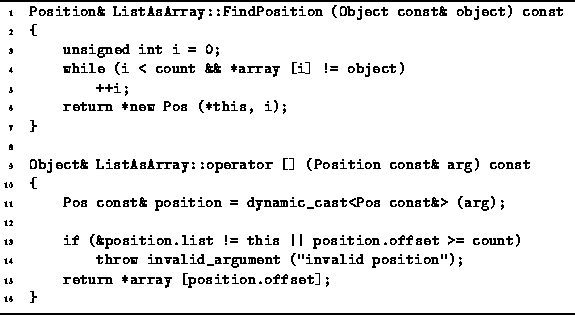

Data Structures and Algorithms
with Object-Oriented Design Patterns in C++
Data Structures and Algorithms
with Object-Oriented Design Patterns in C++
Program  defines two more member functions
of the ListAsArray class,
FindPosition and operator[].
The FindPosition member function takes as its lone argument
a const reference to an Object.
The purpose of this function is to search the ordered list
for an item which matches the object,
and to return its position.
The result is a reference to a Position.
Since the Position class is an abstract base class,
there can be no object instances of that class.
However, there can be object instances of a concrete class
derived from the Position class,
such as the ListAsArray::Pos class.
Therefore, the FindPosition function allocates
an new instance of the ListAsArray::Pos class an
returns a reference to that instance.
defines two more member functions
of the ListAsArray class,
FindPosition and operator[].
The FindPosition member function takes as its lone argument
a const reference to an Object.
The purpose of this function is to search the ordered list
for an item which matches the object,
and to return its position.
The result is a reference to a Position.
Since the Position class is an abstract base class,
there can be no object instances of that class.
However, there can be object instances of a concrete class
derived from the Position class,
such as the ListAsArray::Pos class.
Therefore, the FindPosition function allocates
an new instance of the ListAsArray::Pos class an
returns a reference to that instance.

Program: ListAsArray Class FindPosition Member Function and Subscripting Operator Definitions
The search algorithm used in FindPosition is identical to that
used in the Find routine (Program ).
The FindPosition makes use of operator== to locate
a contained object which is equal to the search target.
Notice that if no match is found,
the offset is set to the value count,
which is one position to the right of the last item in the ordered list.
The running time of FindPosition is identical to that of
Find:  , where
, where  .
.
The subscripting operator, operator[],
defined in Program
takes a const reference to a Position
and returns a reference to the item
in the ordered list at the given position.
The Position argument is dynamically cast
to an ListAsArray::Pos.
Remember that in C++,
run-time checks are made to ensure that the cast is safe.
After a simple validity check,
the offset recorded in the position is used
to index into the array variable,
to obtain the desired result.
If the offset is equal to count,
the position is invalid.
In this case, a reference to the NullObject instance is returned.
The running time of this operator is clearly O(1).
 Copyright © 1997 by Bruno R. Preiss, P.Eng. All rights reserved.
Copyright © 1997 by Bruno R. Preiss, P.Eng. All rights reserved.